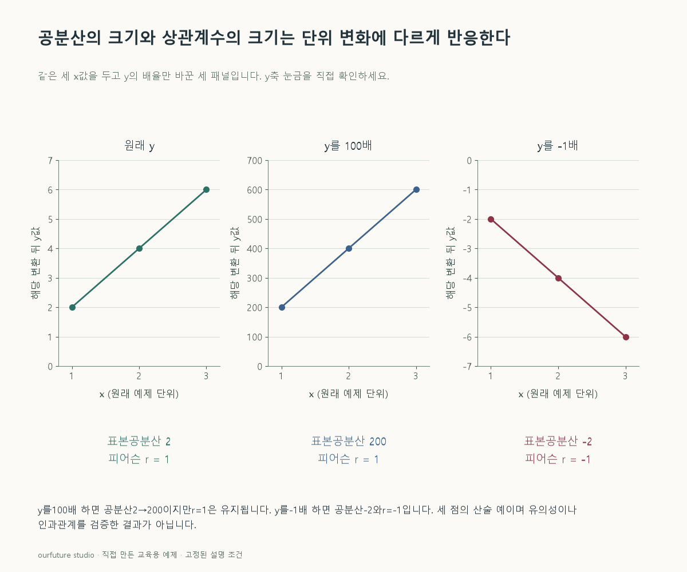

핵심 이론
표본공분산은 각 변수에서 표본평균을 뺀 편차의 곱을 더한 뒤 n−1로 나눈다. 두 편차가 같은 방향이면 양의 항, 반대 방향이면 음의 항이 생긴다. 공분산의 단위는 두 변수 단위의 곱이다. 같은 관계라도 cm를 mm로 바꾸면 수치의 크기가 달라질 수 있으므로 공분산 값만으로 서로 다른 척도의 관계 강도를 비교하지 않는다.
피어슨 상관계수는 표본공분산을 두 표본표준편차의 곱으로 나눈 값이다. 두 변수의 산포가 0이 아니어야 정의된다. 한 변수를 양수 상수배하면 공분산과 그 변수의 표준편차가 같은 비율로 바뀌어 상관계수는 유지된다. 음수 상수배는 관계의 방향을 뒤집으므로 부호가 달라질 수 있다.
상관계수는 선형 관계를 요약한다. 0이라고 모든 관계가 없다는 뜻은 아니며, 큰 양의 값이라고 한 변수가 다른 변수를 일으킨다는 증거도 아니다. 표본의 구성과 이상값이 결과를 바꿀 수 있어 산점도를 함께 보는 것이 좋다. 아래의 세 점은 계산 원리를 보이는 완전한 직선이며 일반화된 실제 관측 결과가 아니다.
작은 예제로 확인하기
같은 세 관측에서 x와 y를 짝지은 자체 자료다.
| 관측 | x | y |
|---|---|---|
| A | 1 | 2 |
| B | 2 | 4 |
| C | 3 | 6 |
x의 평균은 2, y의 평균은 4다. 각 행의 편차곱은 (−1)×(−2)=2, 0×0=0, 1×2=2여서 합이 4이고, n−1=2로 나누면 표본공분산은 2다. 표본표준편차는 각각 1과 2이므로 피어슨 상관계수 r=2/(1×2)=1이다. y를 100배 하면 공분산은 200, y의 표준편차도 200이 되어 r=200/(1×200)=1로 유지된다.
그림으로 확인하기

직접 고르기
x=[1,2,3], y=[2,4,6]. 표본공분산은 n−1로 나눈다. y만 100배 한다.
변환 후 공분산과 피어슨 상관계수는?
- 1. 2와 1
- 2. 200과 100
- 3. 2와 100
- 4. 200과 1
정답과 오답의 이유 확인하기
정답 4번 — 200과 1
공분산은 100배인 200이 되고 표준편차 배율이 상쇄되어 상관계수는 1로 유지된다.
- ① 공분산의 단위 배율을 반영하지 않았다.
- ② 상관계수는 100이 될 수 없고 이 경우 배율은 상쇄된다.
- ③ 공분산과 상관계수 양쪽의 변화를 잘못 적용했다.
조건 하나 바꾸어 풀기
원래 y를 −1배 하여 [−2,−4,−6]으로 바꾸면?
풀이: 표본공분산 −2, 상관계수 −1
한 변수의 부호만 반대로 하면 선형 관계의 방향이 뒤집히고 표준편차의 크기는 그대로다.
다시 떠올릴 단서
공분산에는 단위가 남고 상관계수에서는 산포 단위가 나뉜다.
근거와 적용 조건
- SciPy: pearsonr — Notes: Pearson correlation formula. 확인일 2026-10-30.
상황·수치·보기·조건 변경은 자체 교육 예제다. 민간 복원 문항의 공식 정답이나 실제 성능·학습 효과를 뜻하지 않는다.
읽은 내용을 적용해 보기
세 점의 계산 예다. 상관의 유의성이나 인과관계는 검증하지 않는다. 표본공분산은 n−1로 나눈다.